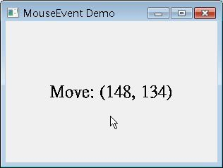

當您執行QApplication的exec()方法之後，應用程式會進入事件迴圈來傾聽應用程式的事件，事件來源通常是視窗系統，例如使用者的滑鼠事件或鍵盤事件，事件來源可以是Qt應用程式事件本身，例如QTimerEvent（在QTimer 與 QLCDNumber 中有QTimerEvent的範例），事件來源也可以是使用者自定義的事件，透過QApplicaiton的sendEvent()或postEvent()來發送。
當事件發生時，Qt為之建立事件實例，QEvent是Qt中所有事件的基礎類別，Qt所建立的事件實例為QEvent的子類別實例，並將之傳送給 QObject子類別實例的event()函式，event()這個函式本身通常不直接處理事件，而是基於所傳送的事件類型，分派給處理特定類型的事件處 理者（Event Handler），這在 事件接受與否、event() 方法 中有進一步說明。
QEvent是Qt中所有事件的基礎類別，最常見的事件類型皆為其子類別，像是滑鼠事件的QMouseEvent、鍵盤事件的QKeyEvent、縮放事 件的QResizeEvent等，這些子類別事件皆加入其特定的函式，像是滑鼠事件的x()、y()函式指出發生滑鼠事件時，滑鼠游標的x、y座標，鍵盤 事件的key()函式可以取得目前所按下的按鍵常數。
以圖型元件來說，通常您會繼承QWidget或其子類別，並重新定義事件處理者，也就是事件處理函式，QWidget定義了像是 keyPressEvent()、keyReleaseEvent()、mouseDoubleClickEvent()、mouseMoveEvent ()、mousePressEvent()、mouseReleaseEvent()等事件處理函式，並接受QEvent的特定子類別實例作為引數，您只要根據想要處理的事件重新定義對應的函式即可進行事件處理。
以下則是個簡單的事件處理示範，繼承了QLabel並重新定義了相關的事件處理者，當滑鼠移動、按下或放開時，顯示滑鼠游標的所在位置：
#include <QApplication>
#include <QWidget>
#include <QLabel>
#include <QMouseEvent>
class EventLabel : public QLabel {
protected:
void mouseMoveEvent(QMouseEvent *event);
void mousePressEvent(QMouseEvent *event);
void mouseReleaseEvent(QMouseEvent *event);
};
void EventLabel::mouseMoveEvent(QMouseEvent *event) {
QString msg;
msg.sprintf("<center><h1>Move: (%d, %d)</h1></center>",
event->x(), event->y());
this->setText(msg);
}
void EventLabel::mousePressEvent(QMouseEvent *event) {
QString msg;
msg.sprintf("<center><h1>Press: (%d, %d)</h1></center>",
event->x(), event->y());
this->setText(msg);
}
void EventLabel::mouseReleaseEvent(QMouseEvent *event) {
QString msg;
msg.sprintf("<center><h1>Release: (%d, %d)</h1></center>",
event->x(), event->y());
this->setText(msg);
}
int main(int argc, char *argv[]) {
QApplication app(argc, argv);
EventLabel *label = new EventLabel;
label->setWindowTitle("MouseEvent Demo");
label->resize(300, 200);
label->show();
return app.exec();
}執行時的參考畫面如下所示：

Qt的事件跟Signal、Slot機制是不同的。Signal與Slot的機制是同步的（Synchronous），Signal是由物件發出的，使 用QObject的connect()連接物件上定義的Slot來立即處理。Qt的事件可以是非同步的（Asynchronous）的，Q使用一個事件佇列來維護，新的事件產生時基本上會被排到佇列的尾端，前一個事 件處理完成，再從佇列的前端取出下一個佇列來處理，必要的時候，Qt的事件也可以是同步的，而事件還可以使用 事件過濾器 進行過濾處理。